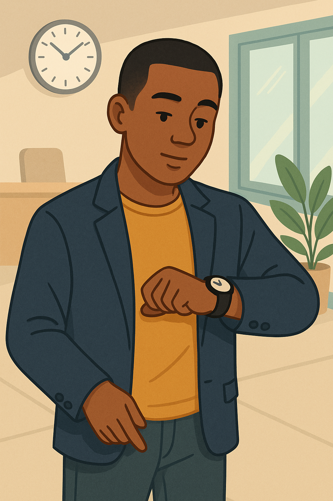
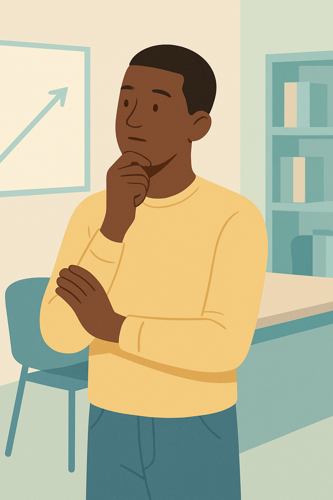

🧠 Grammar Focus – Unit 2, Session 1: Impersonal Structures in Professional English
Introduction
Unit 2 helps you communicate professionally in vocational fields like social integration or logistics. This Grammar Focus explores impersonal structures, which let you give advice or describe situations objectively, perfect for formal emails, reports, or presentations in the workplace.
In professional communication, we often need to give advice, express general ideas, or describe common situations. To do this, we use impersonal structures. These structures help us speak or write in a more formal and objective way — especially when we are not talking about a specific person.
In this section, you will learn how to recognise and use different types of impersonal structures that are common in professional and academic English. You will also see how these phrases are used in real texts and practise using them in context.
In this section, we will explore:
- It is + adjective + to + verb → It is important to plan ahead
- There is / There are → There are many ways to improve your skills
- One / We + verb → One should always be respectful / We often forget how useful teamwork is
Let’s take a closer look at each of these structures and learn how to use them to communicate clearly and professionally.
🎧 Complementary Audio – Guided Explanation
This audio supports you as you go through the lesson. Listen to it for a step-by-step explanation with spoken examples. It’s especially helpful if you prefer learning by listening or want to review while doing other tasks.
🔹 It is + adjective + to + verb
This structure acts like a frame to judge or describe an action’s quality, such as being important or difficult, without pointing to anyone specific. It’s a way to share advice or opinions formally, keeping the focus on the action itself.
This structure is very common in professional and academic English. We use it when we want to give general advice, express opinions, or talk about something that is important, necessary, easy, difficult, etc., without mentioning a specific person.
Structure:
It is + adjective + to + base form of the verb
Examples:
- It is important to be on time.
- It is easy to make mistakes when you are in a hurry.
- It is helpful to plan your goals in advance.
This construction allows you to sound more formal and professional. It also helps you write or speak more impersonally, which is useful in business communication and academic writing.
Be careful!
Do not confuse this structure with “It’s + adjective + that...”, which usually requires a full clause and different grammar.
Let’s now look at some common adjectives that are used in this structure:
- important – It is important to listen carefully.
- necessary – It is necessary to be polite during a meeting.
- helpful – It is helpful to write things down.
- easy / difficult – It is easy to forget names / It is difficult to work under pressure.
🔹 There is / There are
Imagine this structure as setting a stage to introduce ideas, situations, or possibilities. It highlights what exists or is available in a neutral, general way, keeping the focus on the topic rather than the speaker.
The expressions “There is” and “There are” are used to introduce information or ideas, especially when we want to speak generally and formally. These structures help us describe situations, give examples, or present possibilities in a neutral way.
Structure:
There is + singular / uncountable noun
There are + plural noun
Examples:
- There are many ways to improve your skills.
- There is a need for better time management in many jobs.
- There are several strategies you can use to stay motivated.
- There is always room for improvement.
This structure is very useful when writing reports, presentations or formal emails. It helps to keep the focus on the idea, not on the speaker.
We also use “There is / are” with modal verbs or quantifiers to give advice or highlight possibilities:
- There can be misunderstandings if communication is not clear.
- There may be different ways to approach the same problem.
Tip: This structure is often used at the beginning of a paragraph to introduce a topic or idea.
🔹 One / We + verb
This structure lets you adopt a shared or general perspective, like speaking for a group or society. “One” creates a formal, distant tone, while “We” feels inclusive, inviting others into the idea.
We can also express general ideas using “one” (more formal) or “we” (more inclusive). These subjects help us talk about common situations, habits or advice without referring to a specific person.
Structure:
One + verb (formal)
We + verb (neutral / inclusive)
Examples:
- One should always be respectful in the workplace. (formal)
- One can learn a lot from experience. (formal)
- We often forget how useful teamwork is. (inclusive)
- We need to stay motivated to reach our goals. (inclusive)
“One” is typically used in written or formal English, especially in articles or official documents. “We” is more common in presentations, general communication, or when the speaker includes themself in the group.
This structure is very useful in professional situations when you want to make general statements or share common advice in a respectful and polite way.
Tip: In job interviews or presentations, “we” is often used to show that you are a team player or that you share common values with others.
In the next activity, you will practise choosing the right structure depending on the level of formality and the context.
✨ Master these structures to communicate with confidence and professionalism!